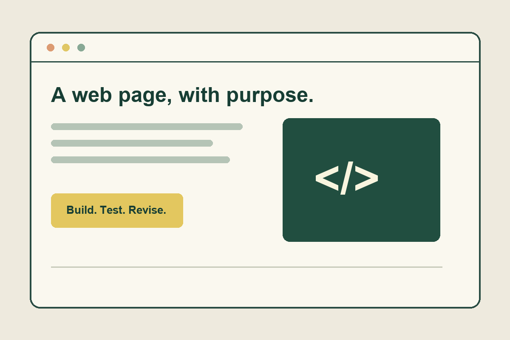

A portfolio of learning & building
Clear code.
Thoughtful web.
Hi, I’m Isa. My coursework explores Python, Django, and accessible web development. This is a place to connect the concepts with the work.

What I’m working with
Explore the learning resources01 / Foundations
Python & Django
Language fundamentals, isolated environments, and the structure behind a web application.
02 / The interface
HTML & Bootstrap
Meaningful page structure and responsive layouts that adapt to the space available.
03 / The experience
Accessible design
Clear navigation, readable content, and keyboard access built into the page.